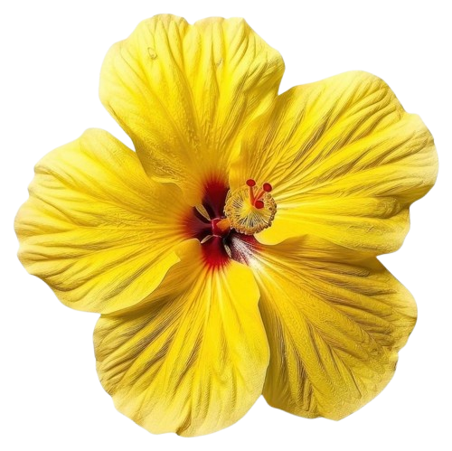

flower • hibiscus • you
Never have I wondered that something so gentle and lovely
could leave behind something so permanent.
A flower renowned for its delicate beauty,
and for blooming only to fade.
and for blooming only to fade.
Maybe what's fleeting wasn't the feelings you left upon me,
but the time we spent with one another.
You were like a hibiscus in bloom;
you were my hibiscus.
you were my hibiscus.
However, time turned out to be unforgiving.
In a moment, you were in my presence, flourishing;
the next, you were gone, slipping away from my grasp.
In a moment, you were in my presence, flourishing;
the next, you were gone, slipping away from my grasp.
Fading, yet the stamen remains even when the flower is gone.
Like the quiet trace of you, lingering in my heart.
← Back
Like the quiet trace of you, lingering in my heart.